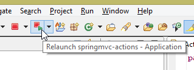
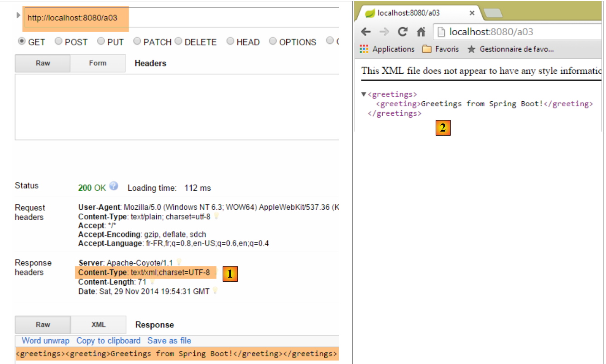
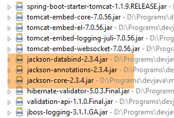
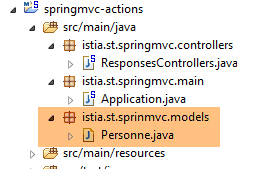
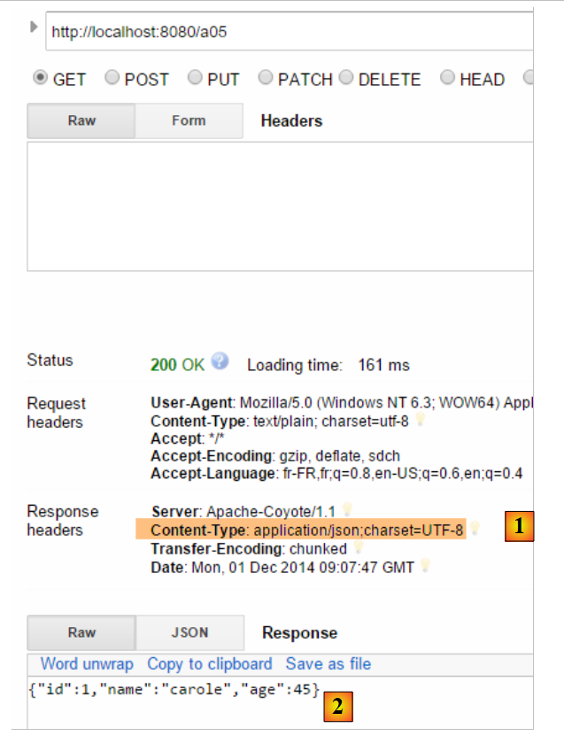

3. Acciones: La respuesta
Analicemos la arquitectura de una aplicación Spring MVC:
 |
En este capítulo, examinamos el proceso que enruta la solicitud [1] al controlador y a la acción [2a] que la procesará, un mecanismo conocido como enrutamiento. También presentamos las diversas respuestas [3] que una acción puede devolver al navegador. Puede tratarse de algo distinto a una vista V [4b].
3.1. El nuevo proyecto
Creamos un nuevo proyecto Spring MVC:
 |
- En [1-2], creamos un nuevo proyecto basado en Spring Boot;
 |
- en [3], el nombre del proyecto Maven;
- en [4], el grupo de Maven donde se colocará el resultado de la compilación del proyecto;
- en [5], el nombre dado al resultado de la compilación;
- en [6], una descripción del proyecto;
- en [7], el paquete donde se colocará la clase ejecutable del proyecto;
- en [8], la naturaleza del proyecto. Se trata de un proyecto web con vistas Thymeleaf. Aquí vemos todas las dependencias de Maven listas para usar que proporciona el proyecto Spring Boot;
- en [9], especificamos que el resultado de la compilación de Maven se empaquetará en un archivo JAR en lugar de un WAR. El proyecto utilizará entonces un servidor Tomcat integrado, que se incluirá en sus dependencias;
- en [10], pasamos al siguiente paso del asistente;
- en [11], especificamos el directorio del proyecto;
 |
- en [12], el proyecto generado;
- En [14-15], cambie el nombre del paquete [istia.st.springmvc];
 |
- en [16], el nuevo nombre del paquete;
- en [17], el nuevo proyecto;
Ahora creamos una nueva clase;
 |
- en [1-3], creamos una nueva clase;
 |
- en [5] le damos un nombre, y en [4] especificamos su paquete;
- en [6] el nuevo proyecto;
La clase tiene actualmente el siguiente aspecto:
package istia.st.springmvc;
public class ActionsController {
}
Vamos a actualizar este código de la siguiente manera:
package istia.st.springmvc;
import org.springframework.web.bind.annotation.RestController;
@RestController
public class ActionsController {
}
- Línea 6: La anotación [@RestController] indica dos cosas:
- que la clase [ActionsController] anotada de esta manera es un controlador Spring MVC y, por lo tanto, contiene acciones que gestionan las URL de los clientes;
- que el resultado de estas acciones se envía al cliente;
La otra anotación [@Controller] que hemos visto es diferente: las acciones de un controlador anotado de esta manera devuelven el nombre de la vista que debe mostrarse. Es entonces la combinación de esta vista y el modelo construido por la acción para esta vista lo que proporciona la respuesta enviada al cliente.
El cambio en la estructura de nuestro proyecto requiere un cambio en la configuración del mismo:
 |
La clase [Application] evoluciona de la siguiente manera:
package istia.st.springmvc.main;
import org.springframework.boot.SpringApplication;
import org.springframework.boot.autoconfigure.EnableAutoConfiguration;
import org.springframework.context.annotation.ComponentScan;
import org.springframework.context.annotation.Configuration;
@Configuration
@ComponentScan({"istia.st.springmvc.controllers"})
@EnableAutoConfiguration
public class Application {
public static void main(String[] args) {
SpringApplication.run(Application.class, args);
}
}
- Línea 9: La anotación [ComponentScan] toma como parámetro una matriz de nombres de paquetes en los que Spring Boot debe buscar componentes de Spring. Aquí, incluimos el paquete [istia.st.springmvc.controllers] en esta matriz para que se pueda encontrar el controlador anotado con [@RestController];
Crearemos varias acciones en el controlador para ilustrar sus principales características. En primer lugar, nos centraremos en los distintos tipos de respuestas posibles para una acción en una aplicación sin vistas.
3.2. [/a01, /a02] - Hola mundo
Nuestra primera acción será la siguiente:
@RestController
public class ActionsController {
// ----------------------- hello world ------------------------
@RequestMapping(value = "/a01", method = RequestMethod.GET)
public String a01() {
return "Greetings from Spring Boot!";
}
}
- Línea 4: La anotación [RequestMapping] especifica la solicitud gestionada por la acción anotada:
- el atributo [value] es la URL que se está procesando,
- el atributo [method] especifica el método aceptado;
Por lo tanto, el método [a01] gestiona la solicitud HTTP [GET /a01].
- línea 5: el método [a01] devuelve un tipo [String], que se enviará tal cual al cliente;
- línea 6: la cadena devuelta;
Ejecutemos la aplicación como hemos hecho varias veces antes y, a continuación, utilizando el [Advanced Rest Client], solicitemos la URL [/a01] con un GET [1-2]:
 |
- en [3], la respuesta del servidor;
- en [4], los encabezados HTTP de la respuesta. Podemos ver que la codificación utilizada es [ISO-8859-1]. Quizás prefiramos la codificación UTF-8. Esto se puede configurar;
- en [5], solicitamos la misma URL utilizando el navegador Chrome;
Añadimos la siguiente acción [/a02] al [ActionsController] (a veces confundiremos la URL con el método que la gestiona, denominado acción):
// ----------------------- accented characters - UTF8 ------------------------
@RequestMapping(value = "/a02", method = RequestMethod.GET, produces="text/plain;charset=UTF-8")
public String a02() {
return "caractères accentués : éèàôûî";
}
- Línea 2: El atributo [produces="text/plain;charset=UTF-8"] indica que la acción envía un flujo de texto con caracteres codificados en formato [UTF-8]. Este formato permite específicamente el uso de caracteres acentuados;
Para aplicar esta nueva acción, debemos reiniciar la aplicación:
 |
El resultado es el siguiente:
 |
- en [1], vemos el tipo de documento enviado por el servidor;
- En [2-3], los caracteres acentuados se ven claramente;
3.3. [/a03]: Devuelve un flujo XML
Añadimos la siguiente acción [/a03]:
// ----------------------- text/xml ------------------------
@RequestMapping(value = "/a03", method = RequestMethod.GET, produces = "text/xml;charset=UTF-8")
public String a03() {
String greeting = "<greetings><greeting>Greetings from Spring Boot!</greeting></greetings>";
return greeting;
}
- Línea 2: El atributo [produces="text/xml;charset=UTF-8"] indica que la acción envía un flujo XML con caracteres codificados en formato [UTF-8];
Al ejecutarlo, se obtiene lo siguiente:
 |
- En [1], el encabezado HTTP especifica que el documento enviado es HTML;
- en [2], el navegador Chrome utiliza esta información para dar formato al texto XML recibido;
Recuerda que, con Chrome, puedes ver los intercambios HTTP entre el cliente y el servidor en la consola de desarrollador (Ctrl-Mayús-I):

A partir de ahora, no tomaremos sistemáticamente capturas de pantalla de los intercambios HTTP entre el cliente y el servidor. En ocasiones, simplemente citaremos el texto de dichos intercambios.
3.4. [/a04, /a05]: devolución de un feed JSON
Añadimos la siguiente acción [/a04]:
// ----------------------- produce from jSON ------------------------
@RequestMapping(value = "/a04", method = RequestMethod.GET)
public Map<String, Object> a04() {
Map<String, Object> map = new HashMap<String, Object>();
map.put("1", "un");
map.put("2", new int[] { 4, 5 });
return map;
}
- Línea 3: La acción devuelve un tipo [Map], un diccionario. Recuerda que, con un controlador [@RestController], el resultado de la acción es la respuesta enviada al cliente. Dado que HTTP es un protocolo para intercambiar líneas de texto, la respuesta del cliente debe serializarse en una cadena. Para ello, Spring MVC utiliza varios convertidores [Object <---> string]. La asociación de un objeto específico con un convertidor se realiza mediante la configuración. En este caso, la autoconfiguración de Spring Boot inspeccionará las dependencias del proyecto:
 |
Las dependencias de Jackson enumeradas anteriormente son bibliotecas para serializar y deserializar objetos en cadenas JSON. A continuación, Spring Boot utilizará estas bibliotecas para serializar y deserializar los objetos devueltos por las acciones. En la sección 9.7 se puede encontrar un ejemplo de código Java para serializar y deserializar objetos Java en JSON.
Obsérvese en la línea 2 que no hemos especificado el tipo de la respuesta que se envía. Veremos cuál es el tipo predeterminado que se enviará.
Los resultados en Chrome son los siguientes [1-3]:
 |
Ahora añadamos la siguiente acción [/a05]:
// ----------------------- produce from jSON - 2 ------------------------
@RequestMapping(value = "/a05", method = RequestMethod.GET)
public Personne a05() {
return new Personne(1,"carole",45);
}
La clase [Person] es la siguiente:
 |
package istia.st.sprinmvc.models;
public class Personne {
// identifier
private Integer id;
// name
private String nom;
// age
private int age;
// manufacturers
public Personne() {
}
public Personne(String nom, int age) {
this.nom = nom;
this.age = age;
}
public Personne(Integer id, String nom, int age) {
this(nom, age);
this.id = id;
}
@Override
public String toString() {
return String.format("[id=%s, nom=%s, age=%d]", id, nom, age);
}
// getters and setters
...
}
La ejecución arroja los siguientes resultados:
 |
- en [1], el servidor indica que el documento que está enviando es JSON;
- en [2], el documento JSON recibido;
3.5. [/a06]: devuelve un flujo vacío
Añadimos la siguiente acción [/a06]:
// ----------------------- render an empty stream ------------------------
@RequestMapping(value = "/a06")
public void a06() {
}
- En la línea 3, la acción [/a06] no devuelve nada. Spring MVC generará entonces una respuesta vacía al cliente;
La ejecución arroja los siguientes resultados:
 |
Arriba, el atributo HTTP [Content-Length] de la respuesta indica que el servidor está enviando un documento vacío.
3.6. [/a07, /a08, /a09]: tipo de datos con [Content-Type]
Añadimos la siguiente acción [/a07]:
// ----------------------- text/html ------------------------
@RequestMapping(value = "/a07", method = RequestMethod.GET, produces = "text/html;charset=UTF-8")
public String a07() {
String greeting = "<h1>Greetings from Spring Boot!</h1>";
return greeting;
}
- Línea 2: La acción [/a07] devuelve un flujo HTML [text/html];
- línea 4: una cadena HTML;
La ejecución arroja los siguientes resultados:
 |
- en [1], vemos que Chrome ha interpretado la etiqueta HTML <h1>, que muestra su contenido en letra grande;
Ahora hagamos lo mismo con la siguiente acción [/a08]:
// ----------------------- result HTML in text/plain ------------------------
@RequestMapping(value = "/a08", method = RequestMethod.GET, produces = "text/plain;charset=UTF-8")
public String a08() {
String greeting = "<h1>Greetings from Spring Boot!</h1>";
return greeting;
}
- Línea 2: La respuesta de la acción es de tipo [text/plain];
Los resultados son los siguientes:
 |
- En [1], Chrome no interpretó la etiqueta HTML <h1> porque el servidor le indicó que estaba enviando un flujo [text/plain] [2];
Probemos algo similar con la siguiente acción [/a09]:
// ----------------------- result HTML in text/xml ------------------------
@RequestMapping(value = "/a09", method = RequestMethod.GET, produces = "text/xml;charset=UTF-8")
public String a09() {
String greeting = "<h1>Greetings from Spring Boot!</h1>";
return greeting;
}
- Línea 2: Enviamos un flujo [text/xml];
Los resultados son los siguientes:
 |
- En [1], Chrome no interpretó la etiqueta HTML <h1> porque el servidor le indicó que estaba enviando un flujo [text/xml] [2]. A continuación, trató la etiqueta <h1> como una etiqueta XML;
Estos ejemplos ponen de relieve la importancia del encabezado HTTP [Content-Type] en la respuesta del servidor. El navegador utiliza este encabezado para determinar cómo interpretar el documento que recibe;
3.7. [/a10, /a11, /a12]: redirigir al cliente
Creamos un nuevo controlador [RedirectController]:
 |
El código para [RedirectController] será el siguiente por ahora:
package istia.st.springmvc.controllers;
import org.springframework.stereotype.Controller;
import org.springframework.web.bind.annotation.RequestMapping;
import org.springframework.web.bind.annotation.RequestMethod;
@Controller
public class RedirectController {
}
- Línea 7: Utilizamos la anotación [@Controller], lo que significa que, por defecto, el tipo [String] del resultado de la acción ahora hace referencia al nombre de una acción o una vista;
Creamos la siguiente acción [/a10]:
// ------------ bridge to third-party action -----------------------
@RequestMapping(value = "/a10", method = RequestMethod.GET)
public String a10() {
return "a01";
}
- Línea 4: Devolvemos «a01» como resultado, que es el nombre de una acción. Esta acción enviará entonces la respuesta al cliente;
Aquí hay un ejemplo:
 |
- En [2], recibimos el flujo de la acción [/a01];
- en [3], el navegador muestra la URL de la acción [/a10];
Ahora creamos la siguiente acción [/a11]:
// ------------ temporary 302 redirect to a third-party action -----------------------
@RequestMapping(value = "/a11", method = RequestMethod.GET)
public String a11() {
return "redirect:/a01";
}
Obtenemos los siguientes resultados:
 |
- En los registros de Chrome [1-2], vemos dos solicitudes, una a [/a11] y la otra a [/a01];
- en [3], el servidor responde con un código de estado [302], que indica al navegador del cliente que redirija a la URL especificada por el encabezado HTTP [Location:] [4]. El código de estado [302] es un código de redireccionamiento temporal;
A continuación, el navegador realiza la segunda solicitud a la URL de redireccionamiento:
 |
- en [5], la segunda solicitud del cliente;
- en [6], el navegador del cliente muestra la URL de la solicitud de redireccionamiento;
Es posible que desee indicar una redirección permanente, en cuyo caso debe enviar el siguiente encabezado HTTP al cliente:
lo que significa que la redirección es permanente. Algunos motores de búsqueda tienen en cuenta esta diferencia entre una redirección temporal (302) y una redirección permanente (301).
Escribimos la acción [/a12] que llevará a cabo esta redirección permanente:
// ------------ permanent 301 redirect to a third-party action----------------
@RequestMapping(value = "/a12", method = RequestMethod.GET)
public void a12(HttpServletResponse response) {
response.setStatus(301);
response.addHeader("Location", "/a01");
}
- Línea 3: Le pedimos a Spring MVC que inyecte el objeto [HttpServletResponse], que encapsula la respuesta enviada al cliente;
- línea 4: establecemos el [status] de la respuesta, el encabezado HTTP [301]:
- línea 5: creamos manualmente el siguiente encabezado HTTP:
que es la URL de redireccionamiento.
La ejecución arroja los siguientes resultados:
 |  |
A partir de este ejemplo, aprenderemos a:
- generar el estado de respuesta HTTP;
- incluir un encabezado HTTP en la respuesta;
3.8. [/a13]: generar la respuesta completa
Es posible controlar totalmente la respuesta, tal y como muestra la siguiente acción en la clase [ResponsesController]:
 |
// ----------------------- complete response generation ------------------------
@RequestMapping(value = "/a13")
public void a13(HttpServletResponse response) throws IOException {
response.setStatus(666);
response.addHeader("header1", "qq chose");
response.addHeader("Content-Type", "text/html;charset=UTF-8");
String greeting = "<h1>Greetings from Spring Boot!</h1>";
response.getWriter().write(greeting);
}
- Línea 3: El resultado de la acción es [void]. En este caso, para enviar una respuesta no vacía al cliente, debes utilizar el objeto [HttpServletResponse response] proporcionado por Spring MVC;
- línea 4: asignamos un estado a la respuesta que no será reconocido por el cliente;
- línea 5: añadimos un encabezado HTTP que no será reconocido por el cliente;
- línea 6: añadimos un encabezado HTTP [Content-Type] para especificar el tipo de datos que estamos enviando, en este caso HTML;
- Líneas 7–8: El documento que sigue a los encabezados HTTP en la respuesta;
Los resultados son los siguientes:
 |
- en [1], reconocemos los elementos de nuestra respuesta;
- en [2-3], vemos que Chrome ignoró el hecho de que:
- el estado HTTP de la respuesta no era un estado HTTP reconocido,
- el encabezado [header1] no era un encabezado HTTP reconocido;
Si el cliente no es un navegador, sino un cliente programático, puedes utilizar los códigos de estado y los encabezados que desees.